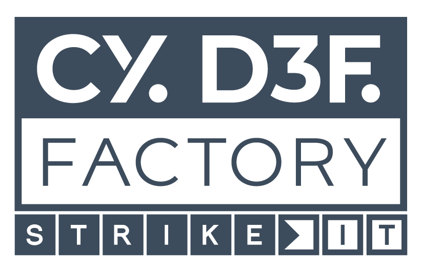

01
Rooms & stays
Explore room categories, arrival details, family needs and the services that shape a seamless stay.
Availability, rates and reservation terms require a live check.Your personal guide
Discover the sanctuary, plan meaningful moments and let the Botanic Virtual Concierge guide you through the details.
Hospitality, in your own words
The Botanic Virtual Concierge is designed to listen naturally, understand intent and guide each guest with the measured warmth of five-star hospitality.
The experience is designed to bring hotel information, dining, wellness, arrival planning and service requests into one elegant conversation—while leaving sensitive decisions to the right human team.
One conversation. The whole sanctuary.
From the first question to the smallest practical detail, the concierge is designed to find the right information, check what can change and guide the next step with care.
01
Explore room categories, arrival details, family needs and the services that shape a seamless stay.
Availability, rates and reservation terms require a live check.02
Find the setting that fits your moment, from breakfast and afternoon tea to exceptional dining.
03
Discover treatments, facilities and restorative experiences. Current access would be verified through an approved source before any promise is made.
04
Get clear guidance for the correct entrance, parking, stations, airports and private transfer requests.
05
Begin an enquiry for celebrations, meetings, private dining and remarkable occasions at the sanctuary.
06
Ask about directions, hotel services or who to contact. In production, uncertain details would be verified or routed through an approved handover path.
No guessing. No invented confirmation.Conversation as a service ritual
A refined voice is only the beginning. The concierge is designed to ask one clear question at a time, confirm sensitive details aloud and never turn uncertainty into a promise.
A natural bilingual opening lets the guest choose English or Dutch.
The conversation stays concise, contextual and focused on the guest’s intent.
The production design will check approved hotel knowledge and, where connected, live systems before variable facts are spoken.
An approved human handover is planned for requests requiring judgement, approval or personal attention.
The technology behind the welcome
The reference architecture combines a natural voice layer with authenticated orchestration, controlled knowledge retrieval and explicit human ownership. Once configured and approved, its components can connect to hotel systems without forcing a wholesale replacement of the operating model.
Reference architecture · subject to configuration and approval
Layer 01
Approved telephony, authenticated access and provider-level safeguards configured for the final call route.
Layer 02
The design brings intent, context and review-gated knowledge together within a clearly limited service scope.
Layer 03
Configured rules are intended to decide whether to answer, verify, prepare a request or involve a person.
Technology that integrates with the operating model
Each capability would be configured around the hotel’s approved security, hosting, performance and integration requirements. Production infrastructure, monitoring, provider access and operating controls remain subject to configuration and approval.
Secure trunks, SIP filtering, fraud controls and overload protection.
Signal clean-up, voice activity detection, interruption handling and anomaly analysis.
Intent, context, retrieval, guided responses and deterministic scenarios.
Review-gated sources, structured records, histories and authorised business repositories.
Approved escalations, notifications and system updates, once their channels and permissions are configured.
Planned service monitoring, incident follow-up and human control.
Redacted audit events, alerting and retention controls, subject to the hotel’s approved policy.
Controlled interfaces to approved internal and external systems.
Prepared to integrate with
Trust by design
Luxury service depends on accuracy. The system is designed to remain helpful without crossing the line between a sourced answer and a decision only the hotel can make.
01
Only reviewed, dated and published hotel knowledge is eligible for retrieval. Stale or conflicting content is withheld. The current corpus remains pending hotel sign-off.
02
Rates, availability, opening times and booking conditions will be checked through approved live integrations once connected. Until then, the concierge can only prepare a request for the hotel team.
03
In an approved live booking mode, a sensitive action would be summarised first, require an explicit yes and be confirmed only after the provider returns a reference. The current configuration remains request-only.
04
The design minimises personal-data collection and keeps access behind controlled boundaries. Final retention, residency and handover settings remain subject to hotel and DPO approval.
This private concept preview is not an operational hotel service. Any production launch remains subject to Botanic Sanctuary Antwerp’s approval of content, voices, integrations, transfer routes, privacy settings and end-to-end call testing.
Selected for a demanding innovation programme
Separately from this Botanic concept, Banana Navy’s Voice Bot Navy project was selected for the Belgian Defence STRIKE IT 2026 programme and is supported by the Cyber Defence Factory / Cyber Command. The project is being developed from prototype toward operational capability.
The STRIKE IT platform is described as designed, hosted and operated in the European Union to support European data-residency and governance requirements. A future Botanic deployment would still require a separate, provider-by-provider review of hosting, data residency, processor terms, GDPR duties and EU AI Act obligations.
The STRIKE IT selection concerns Banana Navy’s Voice Bot Navy project only. It does not certify, sponsor or endorse Botanic Sanctuary Antwerp or this private concierge concept.
STRIKE IT programme context · Banana Navy project only

A new kind of welcome
Call the Botanic Virtual Concierge and discover a more effortless way to begin the guest journey.